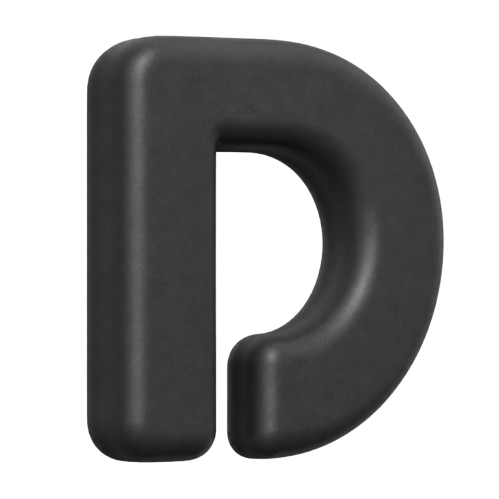

Disclose FrameworkAgentic commerce is going to need structured merchant performance data. That is not a question. The only question is whether the standard that emerges is open or proprietary. The working group exists to make sure it's open, and to make sure the people who understand the problem have a hand in defining it.
The spec defines 61 signals across 12 categories. Not all of them are equally useful at the moment of a purchasing decision. Merchants in the working group help us understand which signals they can produce reliably, which ones they'd actually want to surface, and where the spec asks for data that doesn't exist cleanly in practice.
Signatories are the organizations that hold merchant performance data directly: returns platforms, logistics providers, payment processors, review services. The working group needs to know what attestation looks like in practice, what data can be exposed safely, what can be kept updated, and where the liability and technical limits actually are.
Open standards fail in predictable ways: governance drift, platform capture, adoption incentives that erode over time. Infrastructure builders, organizations with experience shipping and stewarding open protocols, are the people most likely to see those failure modes early. The working group needs that perspective before the spec hardens, not after.
The working group is not asking for resources, engineering time, or endorsement. It's asking for the kind of feedback that only comes from people who understand the data, the attestation mechanics, or the governance risks at a level the spec's author doesn't. If the schema has problems, we need to know before it scales. That's the entire ask.
If the problem is real to you, reach out. Tell us who you are, which track is relevant (merchant or Signatory), and one thing about the current spec you'd want to push on. That's enough to start.
daniel@discloseframework.dev →A form is coming. Email works for now.